Comparativa histórica de los principales hitos de Microsoft Windows — arquitectura, interfaz visual, requisitos y los saltos tecnológicos que definieron cada era.
← Volver a la línea de tiempoLanzado en abril de 1992, Windows 3.1 consolidó la interfaz gráfica de Microsoft sobre MS-DOS y vendió más de 3 millones de copias en los primeros dos meses. Introdujo las fuentes TrueType, multimedia y un entorno estable de ventanas superpuestas.
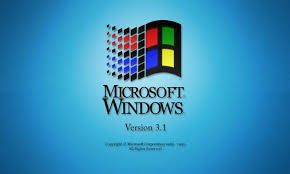
🖥️Windows 3.11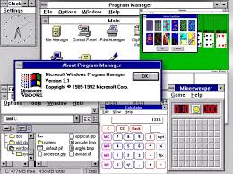
🎨Windows 3.11Lanzado con una campaña histórica con el tema de The Rolling Stones, Windows 95 vendió más de 7 millones de copias en 5 semanas. Introdujo el Menú Inicio, la barra de tareas, Plug and Play y la API Win32 completa, cambiando para siempre cómo el mundo interactúa con una computadora.
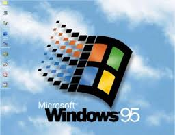
🖥️Windows 95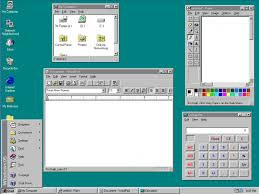
📁Windows 95Windows 98 refinó el escritorio para la era web, integró Internet Explorer en el shell del sistema y fue el primer Windows en soportar múltiples monitores, USB nativo y reproducción de DVD de forma oficial.
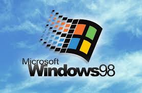
🌐Windows 98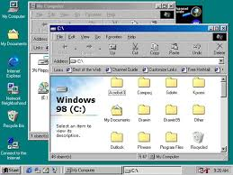
📺Windows 98 SELanzado en septiembre del año 2000, el mismo año que Windows 2000, Windows ME fue el último sistema de la línea Windows 9x — la rama doméstica basada en DOS. Aunque compartían año de lanzamiento, ME y Windows 2000 eran productos completamente distintos, con kernels diferentes, públicos distintos y destinos opuestos.
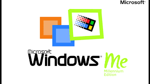
🌅Windows ME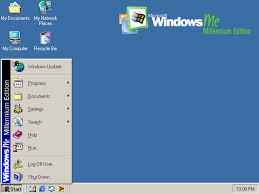
🎬Windows MEWindows 2000 trasladó la robustez del kernel NT4 al escritorio profesional, con soporte completo para NTFS, Active Directory, seguridad avanzada y gestión de redes. No era para uso doméstico — ese rol lo cubría Windows ME ese mismo año. Fue el puente directo hacia Windows XP.
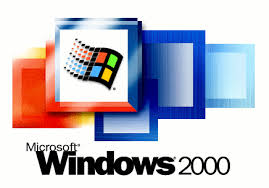
🏢Windows 2000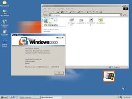
⚙️Windows 2000Con más de 400 millones de copias vendidas y soporte extendido hasta 2014, Windows XP fue el sistema operativo más popular de la historia por años. Unió la base NT estable con una interfaz radicalmente renovada y colorida que definió una generación entera.
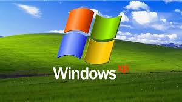
🌿Windows XP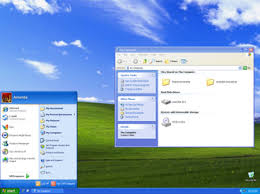
🚀Windows XP SP3Tras 5 años de desarrollo (el más largo entre versiones de Windows), Vista introdujo la interfaz Aero Glass con transparencias reales, el UAC de seguridad, la nueva pila de controladores y DirectX 10. Revolucionario en diseño pero criticado por su rendimiento inicial.
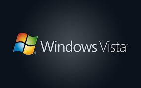
💎Windows Vista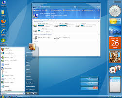
🔄Windows VistaWindows 7 pulió cada aspecto de Vista, redujo el consumo de recursos, refinó la interfaz Aero y se convirtió en la versión más aclamada de Windows en la era NT moderna, manteniendo su popularidad hasta bien entrada la era de Windows 10.
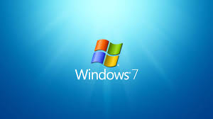
🪟Windows 7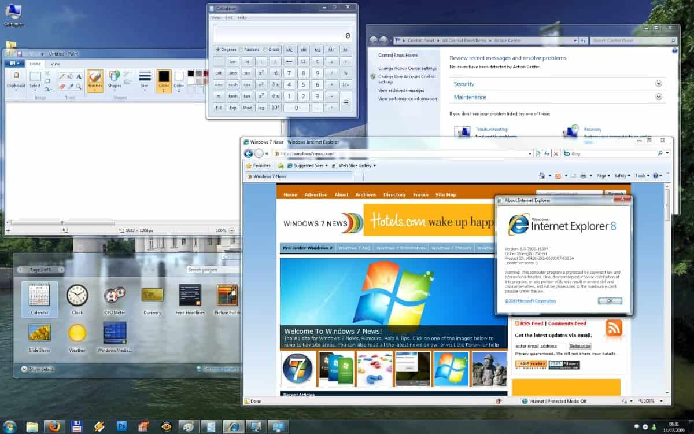
📐Windows 7Windows 8 fue la apuesta más radical de Microsoft: eliminar el menú Inicio clásico y reemplazarlo con una pantalla de tiles para dispositivos táctiles. Introducía soporte ARM, UEFI nativo y un nuevo paradigma de apps modernas — pero dividió a los usuarios.
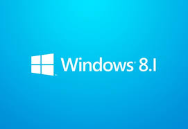
⬛Windows 8.1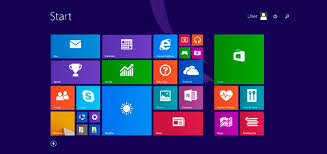
🖥️Windows 8.1Windows 10 reconcilió el escritorio clásico con las ideas modernas de Windows 8 y adoptó el modelo de Windows como Servicio con actualizaciones continuas. Se volvió el sistema operativo más usado de la historia, declarado inicialmente "el último Windows".
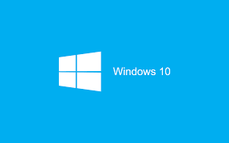
🪟Windows 10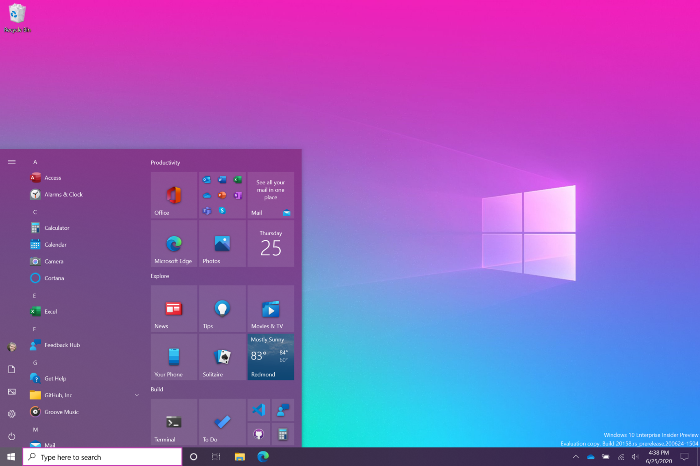
🔔Windows 10Lanzado en octubre de 2021 y superando el 51% del mercado de escritorio en 2025, Windows 11 es el rediseño visual más profundo desde la era Aero. Centra el menú Inicio, redondea todo el sistema, refuerza la seguridad con TPM 2.0 e integra IA con Copilot.
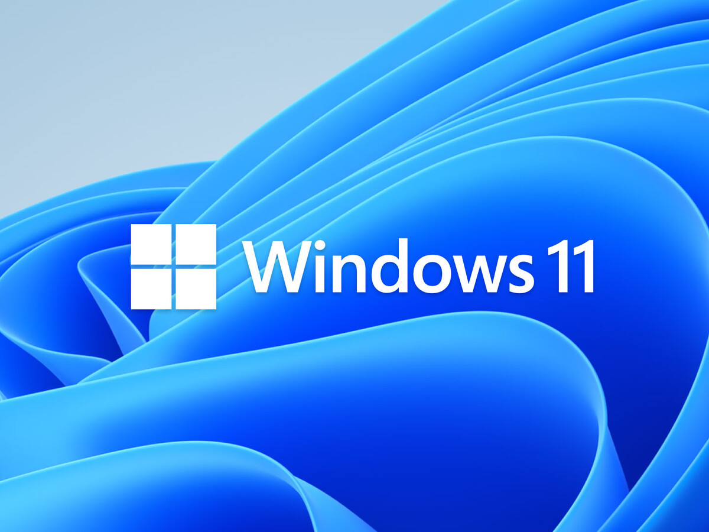
✨Windows 11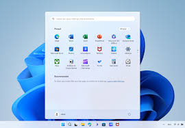
🪟Windows 11Tabla con los hitos clave de cada versión: año, requisitos, arquitectura, lenguaje visual y el salto que definió cada generación.
| Versión | Año | RAM mínima | Arquitectura | Lenguaje visual | Salto clave |
|---|---|---|---|---|---|
| Windows 3.1 | 1992 | 2 MB | 16-bit / DOS | Gris plano, relieve 2D, 256 colores | Primera GUI estable con TrueType y multimedia |
| Windows 95 | 1995 | 4 MB | Híbrido 16/32-bit | Gris 3D, Inicio verde, fondo teal | Menú Inicio, Win32 API, Plug and Play |
| Windows 98 | 1998 | 16 MB | Híbrido 16/32-bit | Igual a 95 + Active Desktop web | USB nativo, multi-monitor, web integrada |
| Windows ME (doméstico) | 2000 | 32 MB | 9x híbrido DOS — NO es NT | Idéntico a Win98 · sin cambios visuales notables | Última línea 9x · Movie Maker · System Restore |
| Windows 2000 (empresarial) | 2000 | 64 MB | NT 5.0 · 32-bit — NO es 9x | Refinado, profesional, iconos de mayor resolución | Kernel NT puro, NTFS, Active Directory |
| Windows XP | 2001 | 64 MB | NT 5.1 · 32/64-bit | Tema Luna: azul brillante, iconos 48px, ClearType | NT unificado para consumidor, diseño colorido |
| Windows Vista | 2007 | 512 MB | NT 6.0 · 32/64-bit | Aero Glass: transparencias, iconos 256px, Segoe UI | GPU para UI (WDDM), UAC, DirectX 10 |
| Windows 7 | 2009 | 1/2 GB | NT 6.1 · 32/64-bit | Aero refinado, taskbar con iconos sin texto | Aero Snap/Peek, Jump Lists, DirectX 11 |
| Windows 8 | 2012 | 1/2 GB | NT 6.2 · 32/64/ARM | Metro Flat: tiles, colores sólidos, sin Aero | Diseño flat, ARM/UEFI, WinRT API |
| Windows 10 | 2015 | 1/2 GB | NT 10.0 · 32/64-bit | Fluent Design: acrílico, modo oscuro, revelado | WaaS, OneCore, DirectX 12, WSL |
| Windows 11 | 2021 | 4 GB | NT 10.0 · Solo 64-bit | Mica/Acrílico, bordes redondeados, Segoe Variable | TPM 2.0, DirectStorage, Copilot IA |